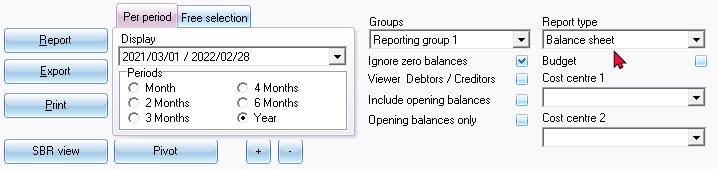
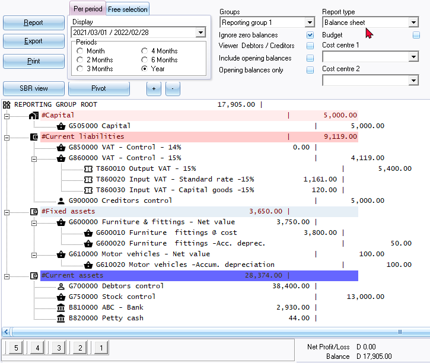
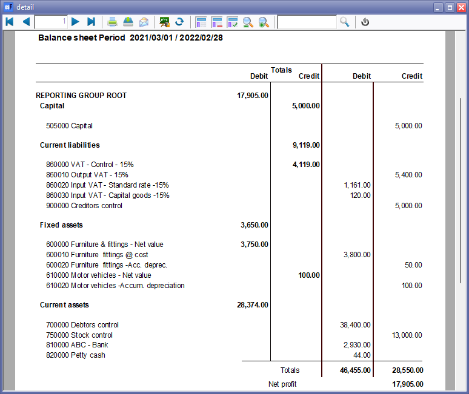
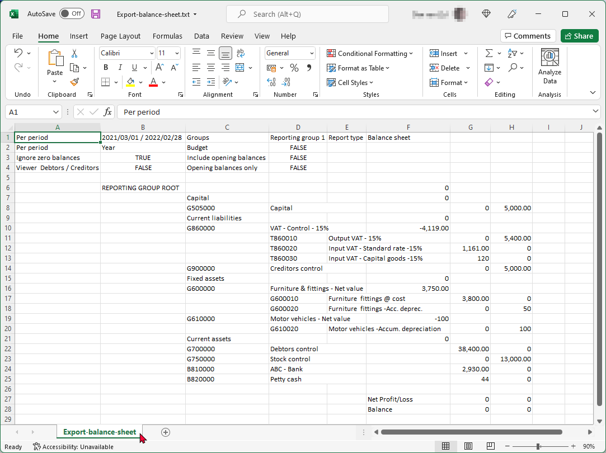

Ledger analyser - Balance sheet
The Balance sheet is a statement of all Assets and Liabilities of a business at a particular time. It has three main components, i.e. Assets, Liabilities and Capital. This report will reflect the owners' interest in the business, as well as all Liabilities and Assets.
|
|
The balancing figure is the Net Profit or Loss. A Net Profit is displayed, when the Income account balances are more than the Expense account balances. A Net Loss is displayed, when the Expense account balances are more than the Income account balances. |

The Balance sheet will list all the balances of your accounts which are not created as Income / Expense types in the Setup → Accounts option on the Setup ribbon).
|
|
The Reporting groups (on the Account Group 1 tab in the Groups option on the Setup ribbon) should be linked to the Assets, Capital and Liabilities Financial categories (in the Setup → Financial categories menu on the (Setup ribbon), before this report is generated. |

|
|
This will list all accounts in the chart of accounts reported only in the |

 Balance sheet - Assets, Liabilities and Capital. It includes the following account types, i.e.:
Balance sheet - Assets, Liabilities and Capital. It includes the following account types, i.e.:
 Bank accounts
Bank accounts  Tax accounts
Tax accounts  Retained income / earnings.
Retained income / earnings.  Creditor's control account.
Creditor's control account.  Debtor's control account.
Debtor's control account.
|
|
This report only includes batch and document transactions which are posted. Unposted batches and documents will be NOT be included in this report. To view a list of unposted batches and documents, which is not updated to the ledger, go to Input → Checking unposted items (Default ribbon). |
Balance sheet options
To print a Balance sheet:
- On the Reports ribbon, select Ledger analyser 1 or Ledger analyser 2.
- Select the “Balance sheet” report type.

- Per period - Select a period (Month, 2 Months, 3 Months, 4 Months, 6 Months or Year).
|
|
You may click on the “Free selection” tab. You may select or enter any date or dates, which you need to include the Balance sheet. |
- Groups - "None" is the default option. You may select "Reporting group 1" or "Reporting group 2".
|
|
If you have created two (2) Reporting groups (Setup → Groups), you may have different views of your data. For example the Group options:
|
|
|
To change your view of the Accounting groups , select the groups and use the Move up and Move down buttons to change the sequence. This will determine the sequence in which your Groups are listed on the Setup → Accounts option on the Setup ribbon and on the Ledger analyser is displayed, when Reporting group 1 or Reporting group 2 is selected. |
- Ignore zero balances - If this field is not selected, all accounts will be listed for the Balance sheet. If you select (tick) this field; only those accounts with balances will be included in the Balance sheet.
- Viewer Debtors / Creditors - Do not select (tick) if you only need to list only the control accounts of the Debtor (customer / client) and Creditor (supplier / vendor) accounts. If this field is selected (ticked), it will list all the individual debtor (customer / client) and creditor (supplier / vendor) accounts.
|
|
The Trial balance and the Balance sheet report types allows you to select the Viewer Debtors / Creditors option. Tick this option to show the break down of the Debtor (customer / client) accounts in the Debtor's control account and the break down of the Creditor (supplier / vendor) accounts in the Creditor's control account. This will list all individual debtor (customer / client) for the debtor's control account and creditor (supplier / vendor) account balances for the creditor's control account. |

- Include opening balances - If this option is selected (ticked), it will include the opening balances of those accounts which have opening balances. If this option is not selected; the opening balances will not be included in the Balance sheet.
- Opening balances only - This option will only be available if the "Include opening balances" option is selected. You can select (check) this option to include only the opening balances. All other balances will then be ignored.
- Budget - Leave this option blank to include the actual posted (updated) transactions in the Balance sheet.
|
|
The "Budget" option, if selected, will list only the budget figures (Budget listing) in the Trial balance, Income statement, Balance sheet and Standard column balances report types (if budget figures were entered in the Budgets option (Reports ribbon) or Setup → Accounts option on the Setup ribbon). |
- Cost centre 1 and Cost centre 2 - The Cost centres (2 Groups) will only be available, if Cost centres are added in Setup → Groups on the Setup ribbon; and if activated.
- Click on the Report button. This will build or refresh the Balance sheet with the selected options.
Example : Balance sheet
An example of the "Balance sheet - Reporting group 1" report type, is displayed as follows:

|
|
Buttons 5, 4, 3, 2 and 1 at the bottom of the report - is shortcut keys to the last accessed T-Account viewer options or Pivot options. These shortcuts will be cleared when you close active forms, or when you open the Set of Books. |
If you have created two (2) Reporting groups (in Setup → Groups (Setup ribbon)), you may have different views of your data. For example the Group options:
- None - Lists all accounts according to account code.
- Reporting group 1 - List all accounts according to the reporting group (e.g. Capital + Current Liabilities + Fixed Assets + Current Assets)
- Reporting group 2 - List all accounts according to the reporting group (e.g. Fixed Assets + Current Assets + Capital + Current Liabilities)
|
|
To change your view of the Accounting groups , select the groups and use the Move up and Move down buttons to change the sequence. This will determine the sequence in which your Groups are listed on the Setup → Accounts option on the Setup ribbon and on the Ledger analyser is displayed, when Reporting group 1 or Reporting group 2 is selected. |
Printed example : Balance sheet
Click on the Print button. An example of the printed "Balance sheet - Reporting group 1", is displayed as follows:

|
|
To save the Balance sheet as a PDF file:
|
Spreadsheet example : Balance sheet
To create a Balance sheet - Export file:
- Click on the Export button. This will launch the "Save as" screen.

- Select the folder in which you wish to save the file.
- The default file name will be "Export.txt". Overtype this with your own name.
|
|
If you do not enter and save the Export.txt file name, you may replace existing (previously exported) files. Of an existing exported file is opened, and you are trying to save a export file with the same name, a similar error message as the following will be displayed: Cannot create file "D:\exports\Export.txt". The process cannot access the file because it is being used by another process. |

- Click on the Save button.
- This will automatically open (launch) the file in your system's default text editor program associated with value text file type.
